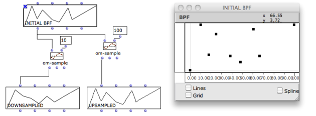
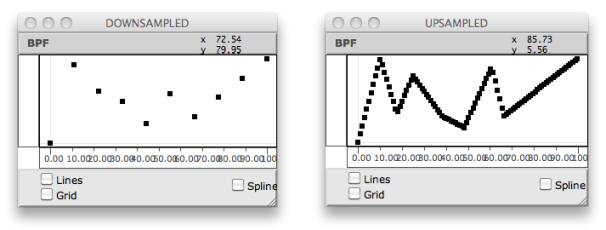

OpenMusic DocumentationHiérarchie de section : OM 6.6 User Manual > Basic Tools > Curves and Functions > BPF / BPC Tools
OpenMusic DocumentationHiérarchie de section : OM 6.6 User Manual > Basic Tools > Curves and Functions > BPF / BPC Tools
Navigation : page précédente | page suivante
Attention, votre navigateur ne supporte pas le javascript ou celui-ci à été désactivé. Certaines fonctionnalités de ce guide sont restreintes.
BPF and BPC Tools
This section details a set of important concept and tools. Among these, a number of function boxes allow to build or manipulate BPFs and BPCs. To access these tools, go to Functions / Basic Tools / Curves & Functions.
Online Documentation Reference
The online function reference provides more detailed information about the following (and more) functions, as well as different arguments. To refer to it, select a function and press d.
Getting Coordinates : Transfer and Point Coordinates
Point-Pairs : Points of the Curve
The point-pairs function returns the points of the curve as a list of (x y) coordinates.

Point-pairs : list of (x y) points in the curve.
Transfer : Selected Points
Two transfer tools return the values of points that are not explicitly given in the curve.
"X-transfer" returns the ordinates for a given abscissa.
"Y-transfer" returns the abscissa values corresponding to given ordinates.

Transfers : x-transfer returns the y-coordinate for x=5. Y-transfer returns the various abscissa for y=20.
Sampling a Curve : Om-Sample
| Sampling consists in creating a new curve of n regularly sampled points, out of an initial set of points. |
Inputs
The om-sample function has two default inputs :
It has three optional inputs :
|

The sampling rate can be expressed as a float input to Om-samplezoom
|
{kind=link}
"sample-rate" input : Integer or Float
Be a curve whose min = 0 and max = 100.
- Integer : n = 20 we get 20 points, whose values are (0 5 10 15 20 25 30 35 .... 100).
- Float : SR = 20.0, we get 5 points, whose values are (0 20.0 40.0 60.0 80.0 100.0).
In any case n = (xmax - xmin) / SR
Outputs
Om-sample returns 3 values :
- a sampled object, such as a BPF , BPC ...
- a list of x -coordinates
- a list of y -coordinates
Up-Sampling and Down-Sampling

If n is lower than the initial number of points, curves are down-sampled. If n is higher, curves are up-sampled.

Splines : Om-Spline
|
Splines are mathematical functions defined piecewise by polynomial interpolation. They are used for generating smoothed interpolated shapes , starting from a set of control points. The om-spline function generates spline curves starting from the points of a BPF or BPC. |
Inputs
"resolution" : a number of points in the spline preview.
"degree" : a number of adjacent control points used for computing the spline curve points. Higher values produce smoother curves.
Outputs
The three outputs of om-spline return :
|

|
Spline Preview
The BPF and BPC editors allow to visualize a preview of the output spline object.
Spline Preview in the BPF/BPC Editors.
Références :
Plan :
- OpenMusic Documentation
- OM 6.6 User Manual
- Introduction
- System Configuration and Installation
- Going Through an OM Session
- The OM Environment
- Visual Programming I
- Visual Programming II
- Basic Tools
- Curves and Functions
- BPF / BPC
- BPF/BPC-Libs
- Editors
- BPF / BPC Tools
- 3D Objects
- Array
- TextFile
- Picture
- Curves and Functions
- Score Objects
- Maquettes
- Sheet
- MIDI
- Audio
- SDIF
- Lisp Programming
- Errors and Problems
- OpenMusic QuickStart
Navigation : page précédente | page suivante
A propos...(c) Ircam - Centre Pompidou